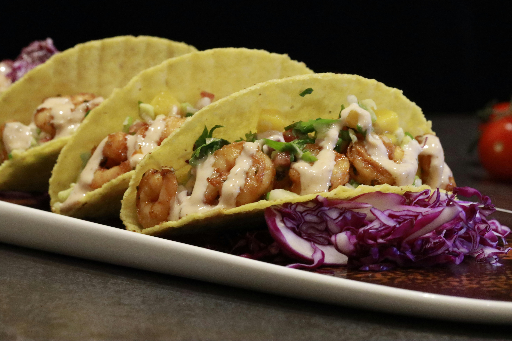

Shrimp Tacos

Description
Shrimp tacos are a light and flavorful dish that combines seasoned shrimp with fresh toppings in a warm tortilla.
They're easy to prepare and make a great choice for a quick weeknight meal or casual gathering.
The toppings can be customized—try shredded lettuce, diced tomatoes, avocado, or a drizzle of lime crema.
These tacos are flexible, fun to build, and packed with flavor.
Ingredients
- 1/2 pound shrimp, peeled and deveined
- 1 tablespoon olive oil
- 1 teaspoon chili powder
- 1/2 teaspoon garlic powder
- 1/4 teaspoon paprika
- Salt and pepper to taste
- 4-6 small tortillas
- Optional toppings: shredded cabbage, avocado, salsa, lime wedges, sour cream
Steps
- In a bowl, toss shrimp with oil, chili powder, garlic powder, paprika, salt, and pepper.
- Heat a pan over medium heat and cook shrimp for 2-3 minutes per side until pink and cooked through.
- Warm tortillas in a dry skillet or microwave.
- Fill each tortilla with cooked shrimp and your choice of toppings.
- Serve immediately with lime wedges on the side.